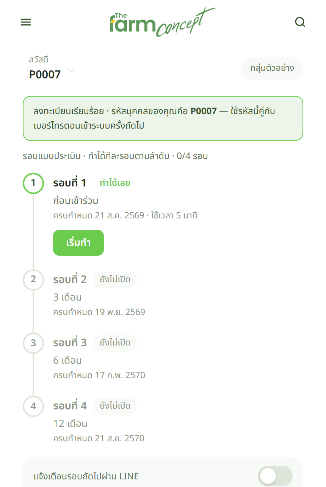
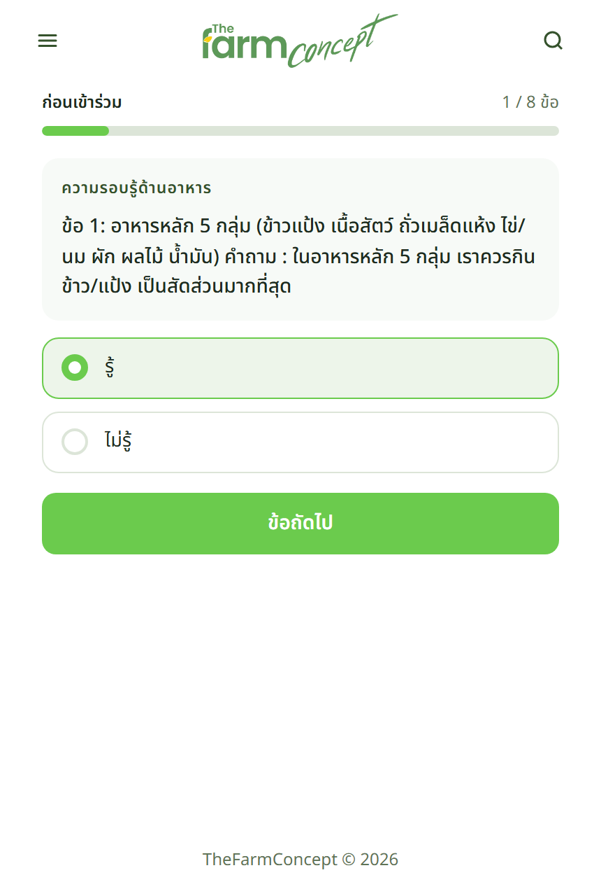
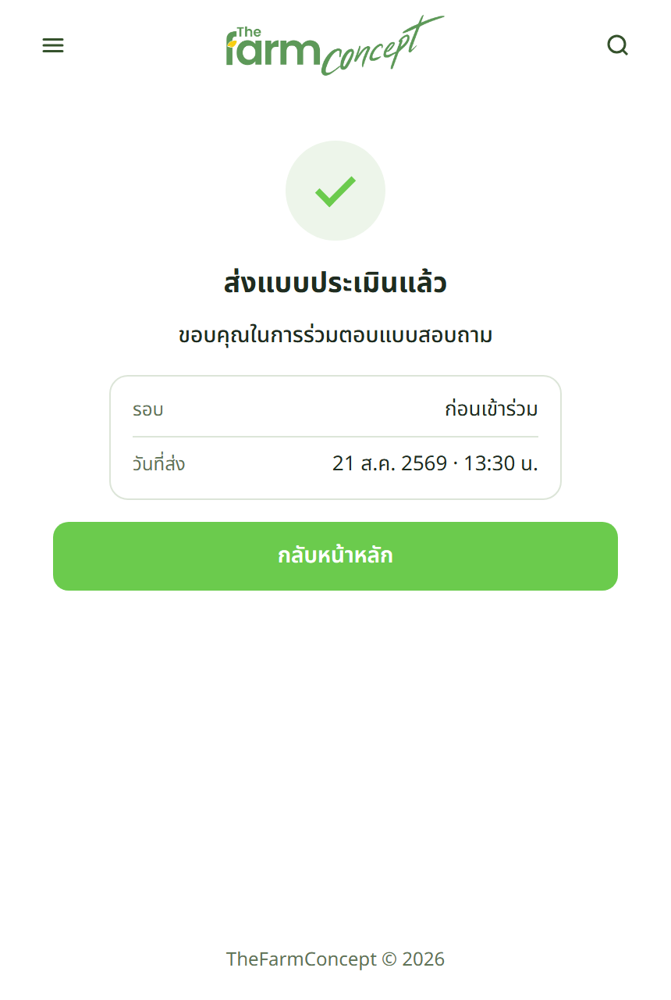

ผู้เข้าร่วม
ลงทะเบียนเสร็จแล้วตอบต่อได้เลย



รอบแรกชื่อ ก่อนเข้าร่วม — ต้องตอบให้เสร็จตั้งแต่วันที่เข้ากลุ่ม เพราะเป็นตัวตั้งต้นที่รอบ 3 · 6 · 12 เดือนเอาไปเทียบ ถ้าไม่มีรอบนี้ รายงานจะบอกได้แค่ค่าปัจจุบัน บอกไม่ได้ว่าเปลี่ยนไปเท่าไร
| ทำที่ไหน | อย่างไร |
|---|---|
| ผู้เข้าร่วมทำเอง | ลงทะเบียนเสร็จ ระบบพาเข้าหน้าหลักทันที รอบ "ก่อนเข้าร่วม" จะขึ้นเป็นรอบที่ถึงคิว กดตอบได้เลย |
| หน้างาน มีเจ้าหน้าที่ช่วย | ให้สแกน QR ติดตามสุขภาวะที่โต๊ะ แล้วนั่งตอบตรงนั้น จบใน 2–3 นาที |
| เก็บมาเป็นกระดาษ | เจ้าหน้าที่คีย์เข้าระบบให้ที่หน้ากลุ่มตัวอย่าง |
เจอปัญหาให้ทำอย่างไร
| อาการ | ให้ทำ |
|---|---|
| ลืมให้ตอบรอบก่อนเข้าร่วม | ให้ตอบย้อนหลังได้ทันทีที่นึกออก แต่ยิ่งช้ายิ่งไม่สะท้อนสภาพ ณ วันเริ่มต้น |
| ผู้เข้าร่วมไม่สะดวกตอบตอนนั้น | เชื่อม LINE ให้ก่อน แล้วให้ตอบทีหลังจากการ์ดแจ้งเตือน |